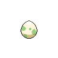
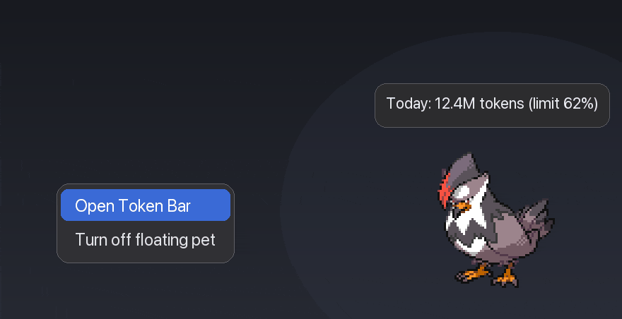

Earn Rare Candy
Fill a 5-hour or weekly limit to earn Rare Candy. Use it from the Bag to grow your partner.
A Pokémon that grows as you code. Track your AI token usage and limits, right from your Mac’s menu bar.
Free · macOS 14+ · Apple Silicon & Intel
The tokens you already use become progress. Your usual workflow, with a little company.

You’ll need macOS 14 or later and at least one supported AI coding tool. No PokeTokenBar account needed.
Release notesbrew install --cask chattymin/tap/poke-token-barUnzip PokeTokenBar.zip and move PokeTokenBar.app into Applications.
The app is self-signed. If macOS blocks the first launch, follow the Gatekeeper steps in the installation guide. Homebrew handles the quarantine attribute for you.
Open installation guideThe tokens you use with AI coding tools hatch an egg and grow your partner. Keep coding, watch it evolve, and keep each graduated Pokémon in your collection.

Your first tokens bring you closer to hatching.

An egg hatches into a surprise Pokémon.

Used tokens advance its evolution line.

Graduate your partner and welcome a new egg.
Illustration: Bulbasaur’s evolution line. Your partner and growth pace vary. No extra AI requests are made to grow a Pokémon.
Today’s tokens, usage trends and provider limits live together. Open the menu bar when you need the details; keep working when you don’t.
Official limits for Claude, Codex and Antigravity, with reset timing and optional notifications.


Fill a 5-hour or weekly limit to earn Rare Candy. Use it from the Bag to grow your partner.
Use tokens you’ve already spent to get Rare Candy, nature-changing Mints, a Shiny Charm or a new egg.
Pin an owned species to the menu bar and desktop pet. Your current partner keeps growing in Home.
Get to know each Pokémon’s individual values, ability and moves in its profile.
See the total from your supported tools in the menu bar. Open the popover for a breakdown by provider.
Claude, Codex and Antigravity limits with reset countdowns and clock times. Choose used or remaining; percentages stay aligned with matching progress bars.
Estimate when your current 5-hour window will reach 100%, based on your current usage rate.
Seven UI languages. Pokémon, type, ability and move names follow your selected language, with English when a translation is unavailable.
Choose alerts for approaching usage limits, hatching, evolution and graduation.
Add per-provider scan folders when your logs live outside the default locations. Wildcards and a live match count help you find them.
Use a claude.ai session key in Settings → Advanced to read official Claude limits without Keychain prompts.
Pi usage follows the model recorded for each turn. The popover breaks today's Pi tokens down by model, biggest first.
See this month’s daily token totals across all tools in the popover. Hover a bar for that day’s usage.
Set difficulty from 10% to 200% and apply it with Save. Your earned progress is preserved. Hatches from a previously graduated base species grow twice as fast.
Your existing token usage raises a partner through its real evolution line. Then a new egg arrives, and the collection grows.
An egg hatches after 5M tokens at the default difficulty. Which Pokémon will it be?
Keep coding to evolve. Adjust difficulty to suit your own pace.
Graduated partners stay in your collection. A fresh egg starts the next chapter.


Let your partner out of the menu bar. Drag it anywhere, hover to check usage, and click to open the app.
Try your pace, check the costs, and see what you can collect. Too many tokens? Lower the difficulty in the app to grow with fewer tokens.
A three-form example at 100% difficulty, without the repeat-species bonus or items. The table excludes the 5M-token hatch; the calculator includes it. One- and two-form lines split the same total differently.
| Rarity | Stage 1 | Stage 2 | Stage 3 (graduate) | Total |
|---|---|---|---|---|
| Common | 125M | 250M | 375M | 750M |
| Uncommon | 312.5M | 625M | 937.5M | 1.875B |
| Rare | 500M | 1B | 1.5B | 3B |
| Legendary | 1B | 2B | 3B | 6B |
How many AI-coding tokens do you burn per day? (total, including cache reads)
Estimates assume a constant daily pace. Difficulty, items and the 2× post-hatch bonus for previously graduated species change the result.
Your companion responds to your coding rhythm, changing its pose and caption as you work.
When you rest, it rests. Weekend menu bars are quiet.
On lighter days, your partner idles beside you.
Your normal pace. It keeps busy too.
When your agents are busy, your partner keeps up.
When a usage limit is close, it tires before you do. Take the hint.
A short animation marks each evolution and graduation.
Hatching has its own animation. A Shiny hatch gets a different entrance.
Every graduation adds to your collection and brings a new egg.
| To collect | How it works |
|---|---|
| Species | Pokémon from Generations I–V, drawn from the app’s live species pool. Each hatch is a surprise. |
| Rarities | Four tiers, Common to Legendary. Rarer partners hatch less often and need more tokens to graduate. |
| ✨ Shiny | A rare surprise at hatch: different colors that stay through evolution. |
| Natures | One of 25 natures per hatch gives each partner its character. |
| Branches | Branching evolution lines prefer paths you have not collected yet. |
| Pokédex | The catch log records individual partners and their evolution lines. The Pokédex groups the species you have owned. |
Works with your coding tools
Yes. PokeTokenBar is a free, open-source fan project. Shop items use the tokens you’ve already spent on coding, not real-money purchases.
No. Usage logs stay on your Mac. The app still uses the network for provider usage and limits, Pokémon data and sprites, service status and updates. It is not a fully offline app.
No. The app reads usage from your supported coding tools. It doesn’t run model turns to grow your companion.
Yes. The Swift source, build instructions and issue tracker are on GitHub.
GitHub